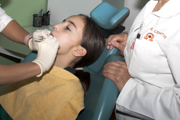
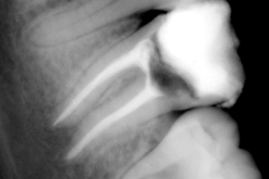
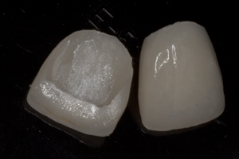

Dental Polyclinic
"Smile"
Services

Children Dentistry
Professional team Smile Dental Polyclinic mainly consists of specialists in pediatric and preventive dentistry with years of experience in dedicated work with children.

Endodontics
Endodontics is a specialist branch of dentistry that deals with the treatment of dental pulp. It is believed that one of the worst and most intense pain just acute inflammation of the dental pulp.

Cosmetic and restorative dentistry
In our center of dental medicine, particular attention is focused on aesthetics with the unconditional application of the rules of the profession. We use the most modern and best quality.
Copyright © 2019
Find us on